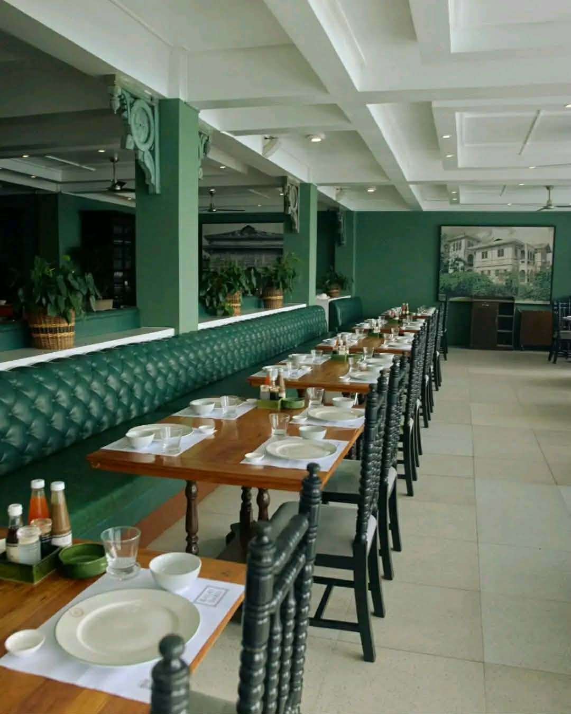
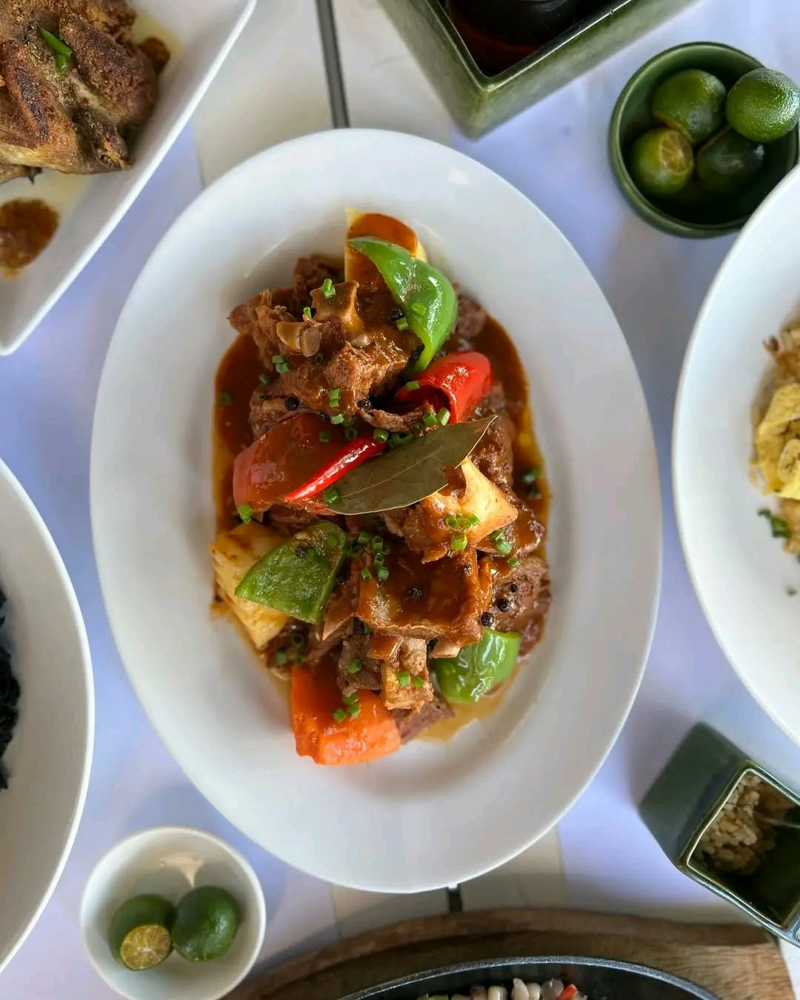

Bulalo
A Batangas favorite, served in the warm and generous spirit of the province.
Where Batangas Heritage Meets Timeless Dining.
Discover the timeless flavors of Batangas through a dining experience that celebrates tradition, craftsmanship, and the rich culinary heritage of the Philippines.
DINEKADA celebrates the traditional dishes, ingredients, and culinary identity of Batangas through an elegant dining experience. The name joins two ideas: Dine, an invitation to sit at our table, and Kada, from Dekada, the decades of tradition behind every dish.
Here, familiar flavors are presented with care, in a setting that honors where they come from.

A glimpse of the flavors that define DINEKADA.
A Batangas favorite, served in the warm and generous spirit of the province.

A beloved comfort dish from Batangas, a true taste of home.

A traditional dish that reflects the coastal heritage of Batangas.

A hearty favorite from the Batangas table, rooted in local tradition.
We would be honored to welcome you to DINEKADA. Share your details and preferred date, and join us for an evening of Batangas flavors.
Tables are held for up to 30 minutes past your reservation time. Walk-ins are always welcome, but advance booking is recommended for weekends.